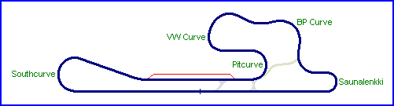

| Length | 1.400 Miles // 2.253 km | |||||||||||||||
| Direction | Clockwise | |||||||||||||||
Contact Information |
||||||||||||||||
| Address | The circuit is no longer operational |
|||||||||||||||
| Telephone | ||||||||||||||||
| Website | ||||||||||||||||
|
||||||||||||||||
| Keimola Grand Prix Circuit (1966-1978) 
|
| Length | 1.400 Miles // 2.253 km | |||||||||||||||
| Direction | Clockwise | |||||||||||||||
Contact Information |
||||||||||||||||
| Address | The circuit is no longer operational |
|||||||||||||||
| Telephone | ||||||||||||||||
| Website | ||||||||||||||||
|
||||||||||||||||
racingcircuits.net - Lasted Updated: 27 September 2005 03:51:20 GMT Daylight Time
Data
Sources
email - from Salvador Chiappetta on Sun 13/06/04 01:05; referring to
correspondence with Martti Alkio
Website - "Keimolan Moottoristadion"; http://personal.inet.fi/urheilu/keimola